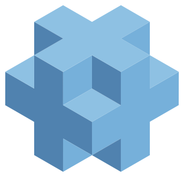

Educação Infantil
Cuidar e educar juntos, com o brincar como método.
Rede Sesc de Educação
Educação que acolhe, forma e transforma — em unidades por todo o Brasil.

Programas
Cuidar e educar juntos, com o brincar como método.
Base sólida em leitura, matemática e convivência.
Formação integral com projeto de vida no centro.
Avaliação diagnóstica, trilhas personalizadas e acompanhamento contínuo — o núcleo de inteligência educacional da Rede.